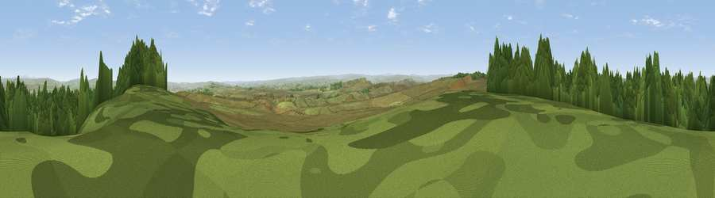

Viewpoint c11474_7604
#12358 in England · top 28% of its area beats it · —The view, rendered

A 360° render of this exact spot computed from the terrain model, tree cover and land cover — summer colours, afternoon light, calibrated against photographs of famous viewpoints. Real trees, hedges and buildings will differ in detail.
The panorama
Grey silhouette: terrain skyline in each direction (720 bearings, Earth curvature and refraction included). Dashed green: skyline with trees (+15 m) and buildings (+8 m) as obstacles. Blue strip: how far the ground is visible on each bearing.
Where the view opens
Wedge length = distance to the farthest visible ground on that bearing (vegetation-aware). Rings at 10, 25 and 50 km.
What fills the view
60% grassland · 38% woodland · 2% cropland
Angular shares of the visible panorama (visual magnitude), not map area. Landscape diversity 0.33 (0–1 Shannon).
Key numbers
More beautiful places nearby
The staircase of upgrades: each row has a higher view potential than everything closer. Driving times are estimates from straight-line distance, calibrated against real road routing — check an actual route before setting out.
| Place | Direction | Drive | Score |
|---|---|---|---|
| Viewpoint c11477_7613 | ENE · 0 km | ~1 min | 68.2 |
| Viewpoint near Bardon Mill | S · 4 km | ~9 min | 71.0 |
| Viewpoint near Greenhaugh | N · 9 km | ~17 min | 71.2 |
| Viewpoint near Fourstones | ESE · 12 km | ~22 min | 71.4 |
| Viewpoint near West Woodburn | NE · 16 km | ~29 min | 73.4 |
| Sighty Crag | WNW · 21 km | ~36 min | 74.7 |
| Viewpoint near Bewcastle | WNW · 22 km | ~36 min | 76.6 |
| Viewpoint near Bewcastle | WNW · 22 km | ~37 min | 78.9 |
55.05761, -2.31111 · source: screening · position refined by local search. Computed location — check access rights before visiting.